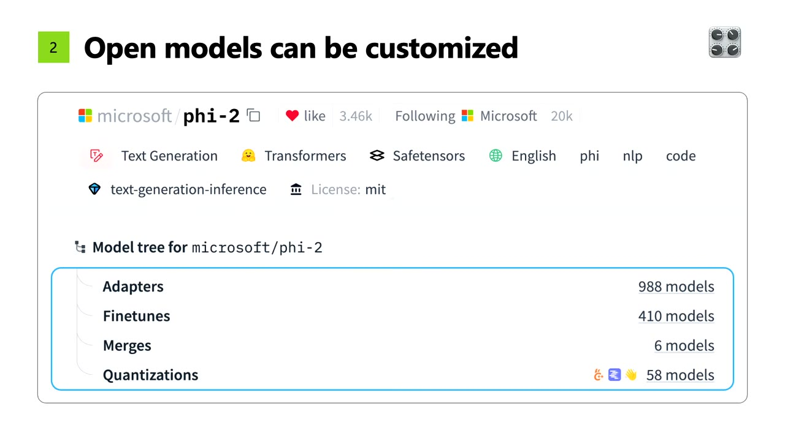
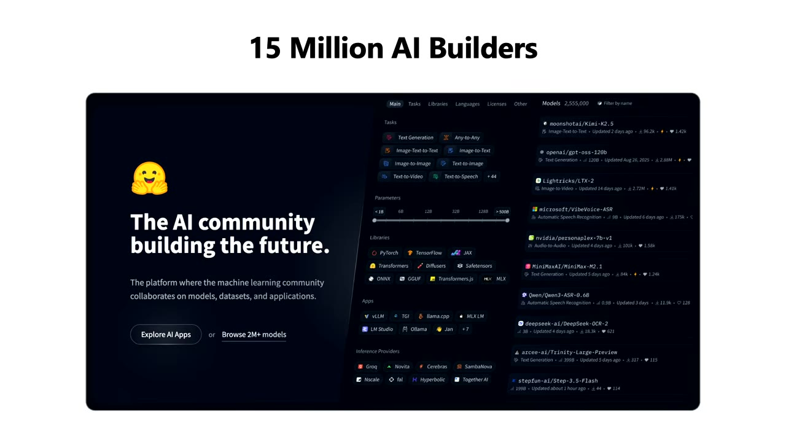
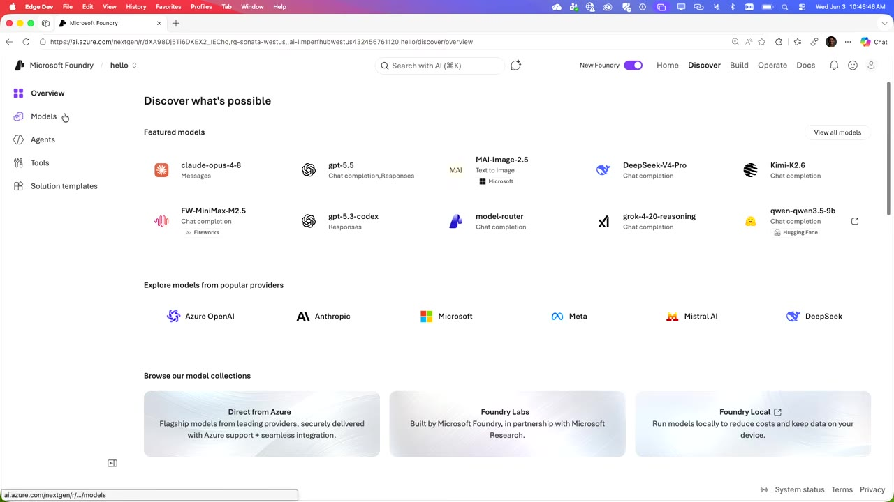
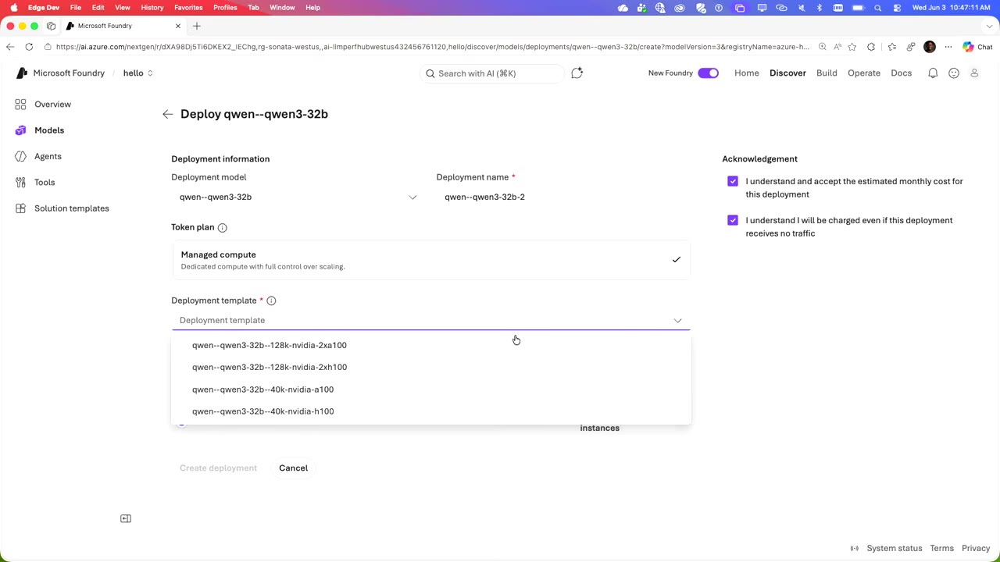
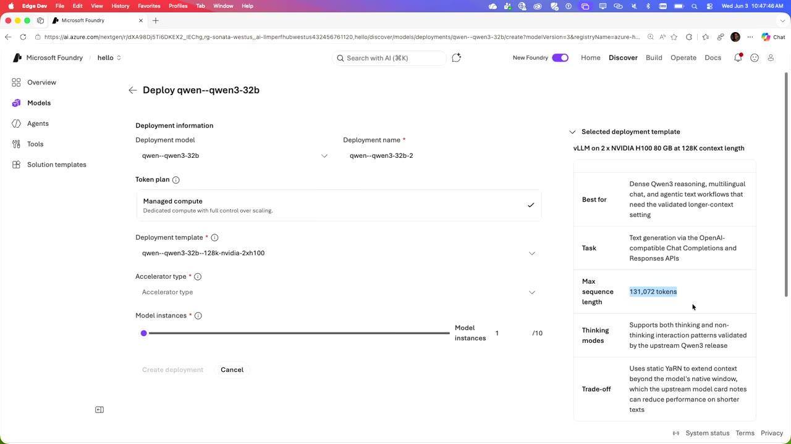
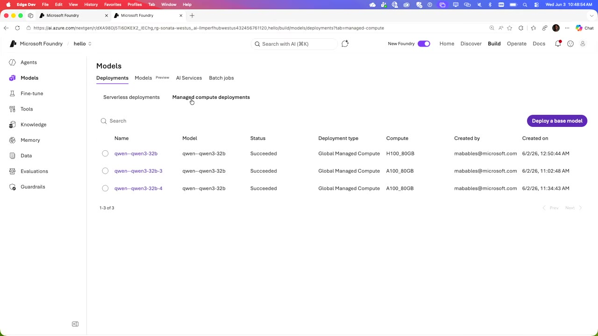
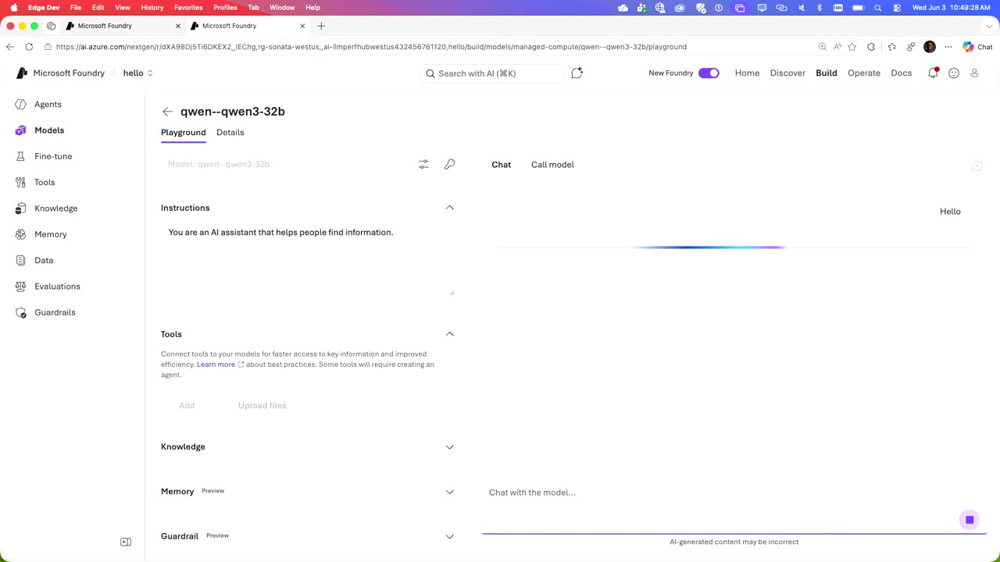
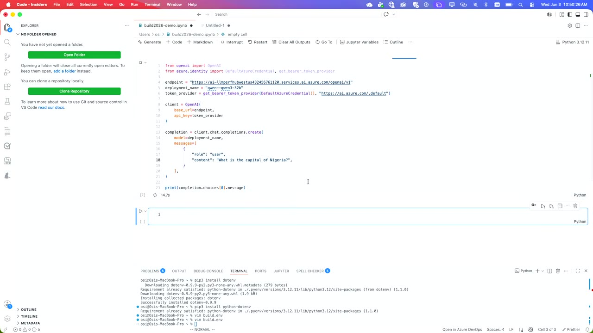
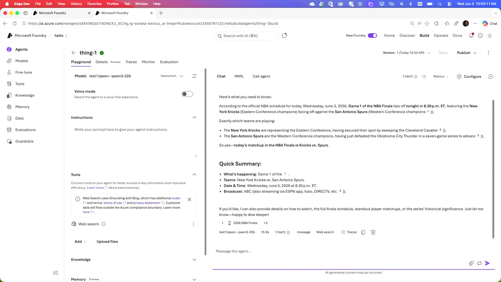
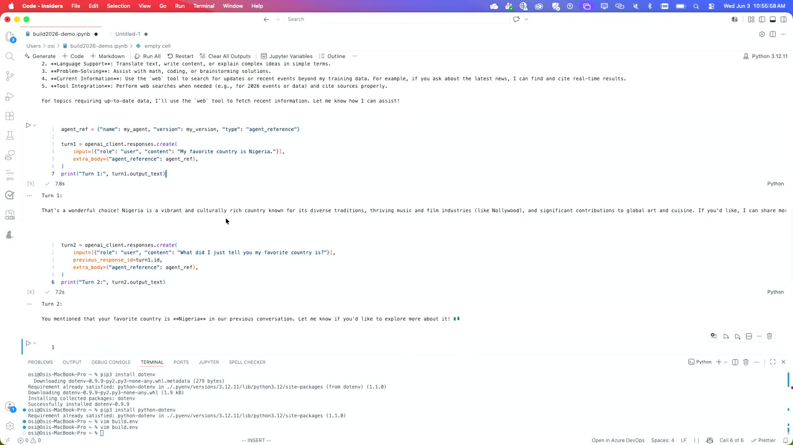

Hugging Face のオープンモデルを Microsoft Foundry で本番化する
GPU インフラを気にせず、オープンソースモデルを「発見 → デプロイ → エージェント/コードへ統合」まで一気通貫で ― 新発表の Foundry Managed Compute と Hugging Face 連携を、Qwen3-32B のライブデモとともに紹介したセッションの日本語要約（画面キャプチャ付き）。
3行サマリ
- 新発表の Foundry Managed Compute は、オープンソース／カスタムモデル向けの managed PaaS。GPU を選ぶだけで、GPU トポロジ・ランタイム（vLLM/SGLang 等）・保守は Foundry が面倒を見る。エンドポイント・SDK・認証・課金はプロプライエタリモデルと共通。
- Hugging Face との連携で 11,000超のオープンモデル（うち1万超が HF 由来）を day-zero で提供。ライセンス審査・リモートコード除去・weights の Foundry 格納・デプロイ検証まで通し、エンタープライズ対応に仕上げてから届ける。
- ライブデモでは Qwen3-32B を数クリックでデプロイ（テンプレートで 2×H100・131,072 トークン等を選択）し、Playground・VS Code・エージェント＋Web検索（当日の NBA ファイナルをライブ回答）・マルチターン RAG まで実演。
1. 概要とアジェンダ
登壇は Microsoft Foundry チームの Vaidya、Hugging Face の Jean（Jeff）、そしてデモ担当の Osi（OC）。テーマは「オープンソースモデルを Foundry で本番化する」こと。20分の枠で3つの側面を扱う。
① プラットフォーム
消費（デプロイ）を楽にする改善＝Foundry Managed Compute（Vaidya）。
② パートナーシップ
最新のオープンモデルをどうエコシステムに取り込むか（Jean / Hugging Face）。
③ デモ
実際のコード／ポータルでのデプロイと利用（Osi）。
2. Foundry Managed Compute（プラットフォーム）
Foundry はエージェントのホスティングプラットフォームで、プロプライエタリなフロンティアモデルとオープンモデルの双方にアクセスできる。Hugging Face 由来を含め11,000超のモデルが並ぶ。プロプライエタリモデルの消費形態は複数あるが、今回の主役はオープンソース／カスタムモデル向けの新構成 Foundry Managed Compute だ。
| 消費形態 | 対象 | 特徴 |
|---|---|---|
| PayGo（トークン課金） | プロプライエタリ | 手軽な従量課金。PoC 向け |
| PTU（Provisioned Throughput） | プロプライエタリ | 制御・低レイテンシの本番環境向け |
| Foundry Managed Compute | オープンソース・カスタム | GPU を選ぶだけの managed PaaS。インフラを気にせず「箱から出してすぐ動く」 |
Managed Compute は Foundry リソースの一部で、エンドポイント・SDK・認証・課金は共通。モデルデプロイ時に本来は GPU トポロジやランタイム（vLLM・SGLang 等）を選び、保守・パッチ当てが必要だが、それらはすべて Foundry が面倒を見る。ユーザーはモデルのパラメータを選んで「Deploy」するだけ。
3. なぜオープンモデルか ― 5つの理由
Jean は「なぜ Azure ユーザーがオープンモデルを使うべきか」を5点で整理する。
① 性能はフロンティアと同等
1年以上前から、オープンのフロンティアはクローズドと同等。artificial analysis の上位20モデルの半分がオープン。
② カスタマイズできる
fine-tune・post-train・distill でユースケースに最適化。Phi-2 には約1,500の派生モデルがある。
③ 体験を自分で制御
weights を自前ホストしないと体験を制御できない。自社 Azure/Foundry か、HF 推論エンドポイントで Azure にデプロイ。
④ 低コスト化
コミュニティが安価化に注力。特定タスクの小型SOTA（IBM Docling Granite は2.5億パラメータ）も。
⑤ バージョン管理
ホストするから版を固定できる。API 裏のクローズドモデルが一夜で変わる問題を回避。HF は完全版管理。

microsoft/phi-2 の Model tree ― Adapters 988 / Finetunes 410 / Merges 6 / Quantizations 58（計約1,500の派生）。企業はベースモデルを自社データ・用途に合わせて改良して使う。04:354. Hugging Face エコシステムの規模
オープンモデルの供給源である Hugging Face の規模はコミュニティ主導で拡大している。
加えて Transformers ライブラリを中心に、推論・ポストトレーニング・強化学習までのオープンソース・エコシステムが揃う。

5. day-zero 提供と「エンタープライズ対応」パイプライン
「HF の300万モデル」と「Foundry の11,000モデル」の差は何か ― Foundry に載る前に、Microsoft と HF の共同で丸ごとの選別・検証パイプラインを通しているからだ。人気/トレンドモデルを毎日監視し、公開当日（day-zero）に Foundry で使えるようにする。
| 工程 | 内容 |
|---|---|
| 毎日の監視・キュレーション | タスク別・プロバイダ別（Nvidia 等）のトレンド/人気モデルを追跡し、同日 Foundry へ |
| ライセンス審査 | 商用利用可能なモデルのみを提供 |
| セキュリティスキャン | ランタイムが実行しうるリモートコードを除外 |
| weights の格納 | Managed Compute では weights を Foundry にアップロードし、サプライチェーンの堅牢性を確保 |
| デプロイ検証 | 使用ランタイム・構成パラメータ・コンテキストウィンドウまで実体験を検証 |
| 外部通信なし | デプロイ済みモデルは自分の安全なテナント外へネットワーク呼び出しをしない |
（商用可のみ）"] D --> E["セキュリティスキャン
（リモートコード除外）"] E --> F["weights を Foundry に格納
（サプライチェーン保護）"] F --> G["デプロイ検証
ランタイム/構成/コンテキスト"] G --> H["同日 Foundry で利用可能
（外部通信なし）"]
6. ランタイム最適化
スケールした利用にはランタイム最適化が要る。モデル・タスクごとに最適なランタイムを Foundry 側が用意し、ワンクリックで最良のスループット/レイテンシ構成を選べるようにしている。
| ランタイム | 主な用途 |
|---|---|
| vLLM | LLM（高スループット/低レイテンシ） |
| SGLang | LLM（プロバイダが最適化するケース） |
| Text Embeddings Inference | 埋め込みモデル（RAG パイプライン用） |
| llama.cpp（C++） | 量子化モデルを CPU で効率実行 |
| NIM / TensorRT-LLM | NVIDIA モデル |
| HF Serve（新SDK） | 音声・ビジョンなどマルチモーダルタスクの最適デプロイ |
7. デモ① ― モデル探索からデプロイまで
ここから Osi のライブデモ（会場 Wi-Fi の「デモ効果」に見舞われつつ）。まず Microsoft Foundry の Discover でモデルカタログ／コレクションを見る。左サイドの Models からプロバイダで絞り込み、Hugging Face コレクションやML タスク（埋め込み・ビジョン・音声など）でフィルタできる。

モデルカタログのデプロイオプションで Managed Compute を選ぶ（モデルは HF Hub からではなく Azure 上でホストされている）。デモでは Qwen3-32B（320億パラメータ）を検索して選択し、デプロイ画面へ。

Qwen3-32B のデプロイ画面。Token plan で Managed compute を選び、Deployment template の4種（128k-2xa100 / 128k-2xh100 / 40k-a100 / 40k-h100）から選択。すべて事前構成済みで、他に設定は不要。15:30テンプレートは Blackwell 世代の NVFP4 等も活用し、agentic 向けに長いコンテキストを優先するかレイテンシを優先するかを簡単に選べる。2×H100 では最大 131,072 トークン。アクセラレータは H100 をクリックするだけで、低レベルのインフラ詳細を意識しなくてよい（単一 H100 なら約41,000トークン）。


qwen3-32b が H100_80GB / A100_80GB で Succeeded。GPU 種別・作成者・作成日時が一覧される。17:138. デモ② ― Playground と VS Code 連携
デプロイ済みモデルは Playground でそのまま試せる（Foundry からオープンモデルをデプロイして即対話できるのは初）。「Hello」と送れば数秒で応答が返る。

qwen3-32b の Playground。指示（You are an AI assistant…）を設定し、Chat で「Hello」を送信。Tools/Knowledge/Memory も同画面から扱える。17:47もっとも開発者は Playground に留まらない。Call model のコードをコピーして VS Code へ。エンドポイント・デプロイ名を指定した OpenAI 互換の呼び出しで、「What is the capital of Nigeria?」→ 答えは Abuja。同じ UI 内でモデルの検索・GPU 選択・デプロイ・コード統合まで完結する「ワンストップショップ」だ。

deployment_name = "qwen--qwen3-32b" に「What is the capital of Nigeria?」を送る（答えは Abuja）。Playground と同じモデルをそのままコードから利用。18:459. デモ③ ― エージェント統合と Web 検索
オープンモデルをエージェントに統合できるのも初。デプロイ済み Qwen3-32B をエージェントに追加し（リソース名は「build 2026」）、新規エージェント（"thing-1"）を作成。「1週間前なら Foundry → Azure ML → quota 取得 → ランタイム/パラメータの当て推量…と多くのハードルを越える必要があったが、今はすべて揃っている」（Jean）。
エージェントは各種ツールと統合でき、代表が Web search。当日は NBA ファイナルの日 ― 学習データにない「今日の試合」を聞くと、ライブ Web 検索で正しく答えた。

thing-1 エージェントが、当日（6月3日）の NBA ファイナル Game 1・New York Knicks vs San Antonio Spurs・20:30 ET を回答。学習データにない最新情報をライブ Web 検索で取得している。21:3010. デモ④ ― エージェンティック RAG とマルチターン
最後に、同じエンドポイント・同じエージェントのままエージェンティック RAG／マルチターンを実演。Turn1 で「好きな国は Nigeria」と伝え、Turn2 では previous_response_id を渡して「さっき言った好きな国は?」と尋ねると、文脈を保持して「Nigeria」と回答。「Nigeria で訪れるべき都市は?」にも旅行アドバイスを返す。

turn2 は previous_response_id=turn1.id を渡し、「さっき言った好きな国は?」に対して「あなたの好きな国は Nigeria だと言いましたね」と文脈を保持して回答。オープンモデルでもマルチターンが成立している。24:1711. まとめとホームワーク
昨日発表された Managed Compute により、Foundry はオープンモデルで作る最も簡単な方法になった。Hugging Face のオープンモデルを取り込み、セキュリティ・性能・GPU を「多くのハードルを越えることなく」使える。デモで見た「発見 → デプロイ → コード/エージェント統合」の一気通貫がその証だ。
（HF コレクション/タスク別）"] --> B["Managed Compute テンプレ選択
（GPU/コンテキスト）"] B --> C["ワンクリック Deploy"] C --> D["Playground / Call model
（VS Code 連携）"] D --> E["Agent に追加＋Web検索等ツール"] E --> F["本番推論
（RBAC・監視・自動スケール）"]
ホームワーク（登壇者より）
- まず AI Foundry で作り始める。
- Managed Compute のプレビューにサインアップする。
- Microsoft のフィードバックポータルから、Foundry に載せてほしい Hugging Face モデルを提案する。